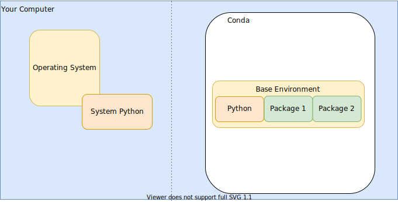
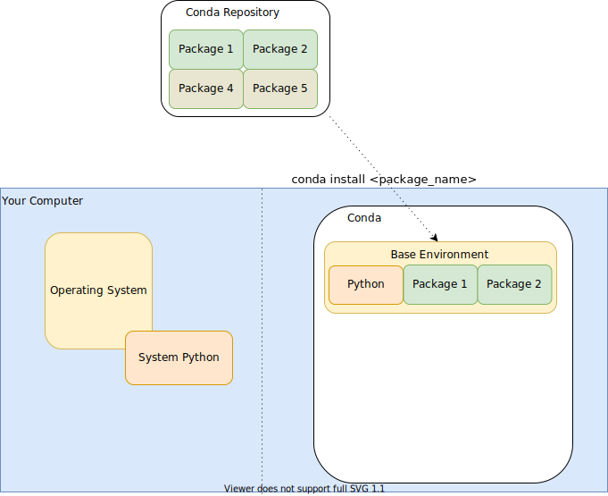
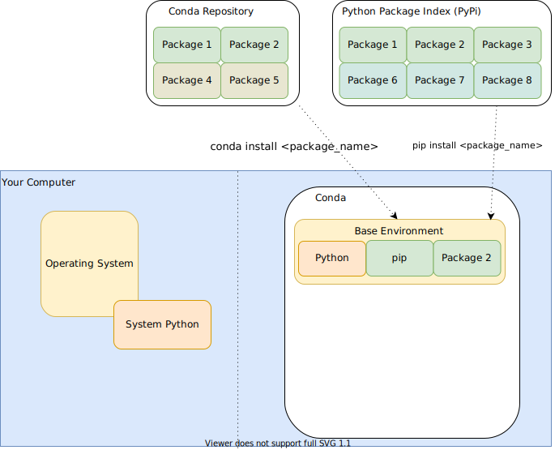
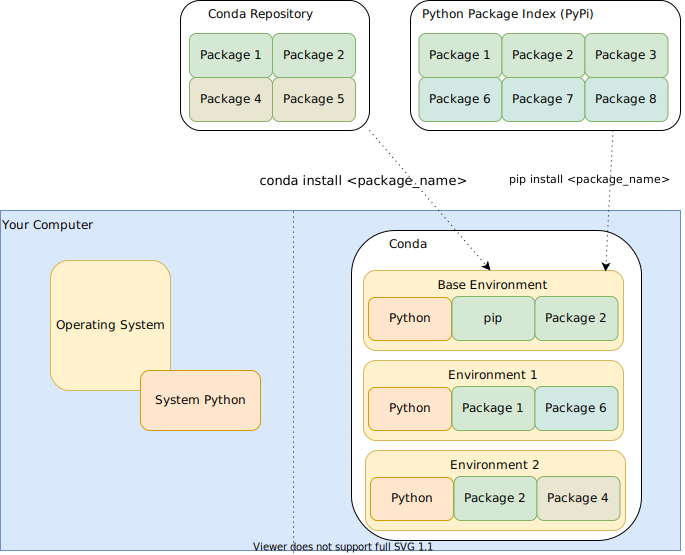

Introduction to Python 

Brainhack Marseille
Julia Sprenger
6 December 2021
Why Python?
Why programming when there’s graphical tools?
- limitations of graphical user interface
- black-box effect
But what about Excel?
- good for
- office data organization
- simple data manipulation
- quick visualization
- not suited for
- reproducible data analysis
- modularization of data, computation and visualization
- large datasets
- distributed datasets
- complex computation
- automation of computation and visualization
- sharing of computations
… and Matlab?
- Matlab features
- focus on matrix manipulation and program solving related to Linear Algebra
- additional functionality available via Toolboxes
- a single integrated development environment
- a single, commercial developer: MathWorks
- requires a licence
- Python features
- high level general purpose programming language
- specific functionality available via Packages
- diverse fields of application
- community based
- free and open
- very flexible language, ‘easy’ for learning programming
What is ‘programming’?
- providing set of instruction to be executed by the computer
- text file of instructions: script
- scripts can make use of
- basic language inherent commands
- other scripts
- other installed libraries/packages/toolboxes
- conventional file extensions for storing scripts
- Python
.py/ Matlab.m
- Python
- scripts are interpreted (/compiled) and executed non interactively
The Python World
Python on your computer

Conda: Package, dependency and environment management for any language—Python, R, Ruby, Lua, Scala, Java, JavaScript, C/ C++, FORTRAN, and more.
On linux you can check all available Python instances using whereis python
Action Install (mini)conda on your computer
- Download the latest miniconda installer from https://docs.conda.io/en/latest/miniconda.html
- Follow the regular install instructions using the default settings (https://conda.io/projects/conda/en/latest/user-guide/install/index.html)
- Locate Python
- On Windows: Open an Anaconda prompt (
Start menu>Anaconda prompt) - On Linux: Open a terminal
- On Windows: Open an Anaconda prompt (
- Confirm Python and miniconda packages were successfully installed
- by running
conda list - have a ‘(base)’ prefix in your prompt
- by running
Package Management

Conda
- view installed packages:
conda list - install package
conda install <package_name> - use
<package_name>==1.0.0to install fix version - conda channels: collection of packages for specific fields
- anaconda (default), bioconda, conda-forge, …
- specify channel to use via
--channel <channel_name>
- general note: remember to use
--helpto get an overview of available arguments
Python Package Management

Python Package Index - PyPI
- Python packages only
- corresponding package manager: pip
- pip itself is a python package
- installs on same level as pip
Environments

- dedicated package versions
- environment creation:
conda create -n <name> python
- show existing environments:
conda env list
- switch / activate an environment
conda activate <name>
- leave an environment
conda deactivate
Action Environment creation
- Create a new environment with python version
3.9 - use the environment name ‘BHMexercise’
- verify the environment contains
pip - use conda to install a package named
numpy - use pip to install a package named
xlrd - use conda to verify the installation(s)
- is conda aware of pip-installed packages?
Let’s code Python
Action Execution and output
- Create a text file
my_first_script.py - use your preferred text editor to add the following line
print('hello world')- save the file
- run
python my_first_script.pyin your terminal
Numerous Python tutorials exist. This one is heavily inspired by https://www.learnpython.org/. For more resources on the topic see also https://wiki.python.org/moin/BeginnersGuide/Programmers
Variables and data types
Python can be your calculator!
- replace the content of the print with a simple calculation, e.g.
1+3. What happens if you use'1+3'instead?
Basic data types
''indicates a string- Numbers are automatically handles either as integer or float (or complex, e.g. for
3+3j) - True / False values are stored as boolean
- To identify which data type is currently used for a variable, use
type()
Operations
Basic operators
+,-,*,/,%(modulo),**(power),//(integer divison) work like a calculator on numbers- but can also be used with other data types, e.g.
'Brainhack' + 'Marseille'
Task Explore data types
- What happens if you try to add a string and a number?
- Can you multiply a string and an integer?
- Print the result of the
1+4calculation with a descriptive text, e.g.The sum of 1 and 4 is '5'
Variables
Define the content of the print() statement in the line and use print() only in the second line. You can assign a value to a variable using the = symbol.
- The value on the right is assigned (stored) in the variable on the left.
You can also assign the result of an operation to a variable
Task: Try this
to_print = 'hello world'and print the content of the variable in the 2nd line of code.
Lists
A list stores multiple values/elements. The elements can be of different types.
Use my_list = [1, 2, 3]. You can access the different elements stored in the list via their index. Python uses 0-based indexing, so the first element in the list can be retrieved via my_list[0]. To get the total number of elements in a list use len().
List entries can also be indexed counting from the end of the list. For this use a negative index, e.g. my_list[-1] will give the last element.
- Task: Print the type of the list and the 2nd value as well as its type
Modifying a list
- You can add a value to a list by using
append(). This is a method of the list, so usemy_list.append(4) - Task: Print the resulting list and confirm it has now 4 elements.
- Task: Try to access the individual characters (elements) of a string via the same method. How can you find out the number of elements in a string?
- Task: Try to replace the first element of the list by the
5.
Loops
To do an operation with each element of a list, we need to loop over all elements. This can be done using a for loop:
for elem in my_list:
print(elem)Here the value assigned to elem changes for each iteration of the loop. The line print(elem) will be called for each element of the my_list list once.
Note that all lines that you want to loop across need to be indented consistently for Python to recognize them. By convention this indentation should consist of 4 spaces.
Range
If you want to iterate over a range of numbers instead of an existing list, Python provides the range() function.
for elem in range(3):
print(elem)Here, range will on the fly generate 3 elements (0, 1 and 2). Note that 3 is not included here.
Task
- Print each element of
my_listby usingrangeand accessing the corresponding element ofmy_listinside of the loop.
Dictionaries
A dictionary is an data structure complementary to a list. In a dictionary data are stored as a key-value pair. A dictionary is defined via curly braces
my_dict = {'event': 'Brainhack', 'location': 'Marseille'}We can access or set a particular value via its key:
my_dict['event']Task
- Define the dictionary as above. In a separate line of code add a 3rd entry with the key
'year'and the value2021
Dictionaries - looping
You can also loop over a dictionary. The element that you loop across is in this case the key.
for elem in my_dict:
print('My key is ' + elem)To iterate over keys and values at the same time use the .items() method:
for key, value in my_dict.items():
print('The value for the key ' + key + ' is ' + value)Nested Data
Elements of lists or dictionaries can be lists or dictionaries itself.
Task
- Create a list that contains 5 dictionaries - one for each of the past Brainhack Marseille events. Use the correct for each event.
Using packages
Thousands of Python packages exist to extend the functions available for your code. The basic ones are already in Python directly.
Imports
To make the functionality of package available within your code you need to import the package. Here we are loading a package for reading data from a comma-separated-values (csv) file:
import csvUsing imports
Now we can use the csv package to create a reader for a csv file. First we open the file using the Python open() function, then we provide this access to the file to the csv package to read the content of the file.
import csv
with open('example.csv', newline='') as f:
reader = csv.reader(f)
data = list(reader)
print(data)To learn about the functionality provided by a package, check the help() or it’s documentation, in this case the csv documentation.
Task
- convert the list of lists that is stored in
datainto a list of dictionaries, containing a dictionary per person. As keys of the dictionary use the first row (header) of the csv table.
Next steps
Easier coding with IDEs
A number of integrated development environments exist. The level of complexity and support can very from basic to fully integrated with other software development tools. Here a list of tools that are commonly used (order by increasing complexity) - Jupyter notebook - Spyder - Visual Studio Code - PyCharm
Outlook
A lot of Pythons power lies in Packages. For advanced data handling and functionality check out the following packages:
Comments
With a growing number of lines present in your script it is usefull to add some comments explaining what your code is about. You can add comment lines in your script by adding
#at the beginning. Python will ignore these lines.